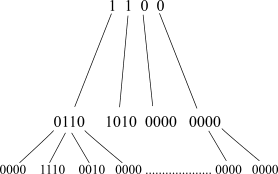
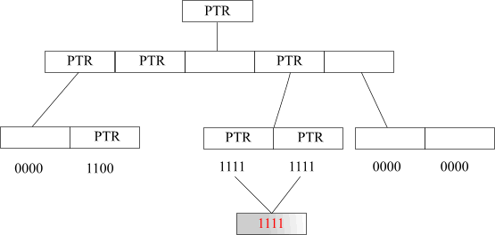

Hierarchical compression
Anatoliy Kuznetsov. 2002.
Introduction
One commonly used form of data sets representation uses bit vectors. It can be much more efficient than a linked list, array, or red-black tree. Bit vectors also give us excellent performance when we want to perform logical operations like unions and intersections. In general we can't do better than one bit per object and all logical operations can be implemented using bitwise operations, which are among the fastest. Bit vectors provide random access to its elements, the facility which is very convenient and important for development. The only thing we need is to give each object a unique index in the vector.
The disadvantage of bit vectors becomes clear if we'd like to encode a set of objects that has potentially millions of entries. Conventional bit vector representation needs to reserve the whole lot of memory and be as wide as the number of distinct objects in our collection. This can outweigh all the advantages that bit vectors can offer. It also means a great deal of storage space is required for the large number of bit vectors.
For example, lets take a collection of 4 million objects. One bitmap representing any aspect of the collection will take 488K bytes. If we would like to keep only 100 bit vectors of that size, it will require 48M.
The progression is linear and it's obvious that most real world applications usually can't afford pure bit vectors. Of course, when storing the bit vectors in a database we could apply some general compression method, such as arithmetic coding or Huffman trees. But accessing the database through the compressed vectors would be very costly. If this kind of decompression combines with a frequent number of logical operations, the time required for processing could be prohibitive.
Fortunately, most real world applications do not keep random data. In many applications bit vectors are very sparse or very dense. Frequently, the distribution of bits can be sparse in one part of the vector and dense in another. It is therefore possible to exploit these features, and write an efficient adaptive implementation of bit vectors with embedded compression.
Obviously, trying to organize bit vectors means we are essentially trading between performance and space. The idea is that in having an efficient and flexible implementation, such a trade-off can be affordable and acceptable.
One alternative is to use hierarchical compression, adapted to our practical needs.
Hierarchical Compression
In hierarchical compression, groups of bits are combined together into a tree-like structure of bit vectors. A '0' (zero) at a top level indicates that all descendants are also 0. A '1' indicates that the descendants contain some non-zero bits. In the first case we don't need to keep the memory for lower levels, which results in significant decrease of memory consumption. If this sounds a little confusing, the following illustration will make it clear.

Fig.1.
The BitMagic Library uses a tree of pointers, which is a particularly efficient technique of implementing hierarchical compression.
A branching ratio of three was used, and instead of using bit vectors for top-level coding, pointer values were used. NULL pointers naturally stand for '0' in a bit vector, and non-NULL stand for '1'. The depth of the compression tree is low, due to the fact we need a particularly low number of comparisons to find a leaf and inspect a bit in it. In cases where the vector is sparse, only the root node need be inspected to determine whether the object is represented in the set.
Leaf nodes can be short blocks of bits dynamically allocated on the heap. If a block consists of only 1 bit, we can replace it with a block of static global memory (which is one for all instances). In this case we have particulary efficient implementation, as illustrated below.

Fig. 2
As you can see, all the memory for bit vectors is fragmented by blocks of equal size. Each block is completely independent from another. We can manipulate blocks, create special implementations of bit vectors for parallel computing, compress blocks using different methods, swap non-frequently used blocks out of the memory, and create pools of blocks to improve memory reallocation operations.
Hierarchical Compression and Memory
Hierarchical, block segmented organization of bit vectors makes it easy to extend addressable space up to 64 bits, which can be very useful for building large sparse bit matrices. Large bit matrices are an interesting topic because different compression and block-forming schemes can be used there.